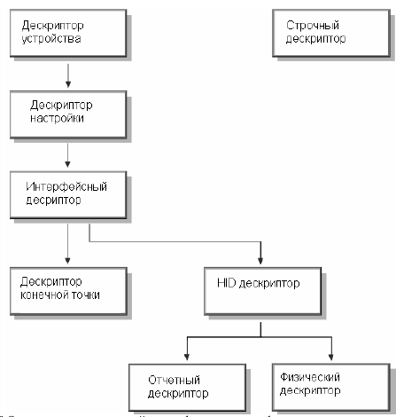
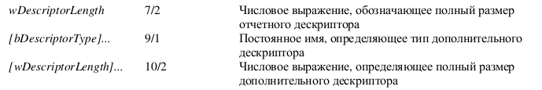
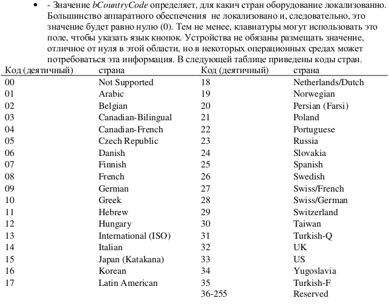

Управление
Информация о USB называется Descriptors и хранится в его ROM. Интерфейс дескриптора может определять устройство как принадлежащее к одному из конечного числа классов. Устройство HID-класса используется соответствующий драйвер для извлечения и маршрутизации всех данных.
Дескриптор устройства определяет, какие другие дескрипторы класса присутствуют. Например, Report Descriptor и Physical Descriptor.
Структура дескрипторов выглядит следующим образом:

Дескриптор устройства и конфигурации один для устройства. Дескрипторов интерфейса может быть несколько (например, в МФУ может быть интерфейс принтера, интерфейс сканера и т.д.).
Репорт дескриптор описывает каждый фрагмент данных, которые генерирует устройство, и размер данных, которые фактически изменяются. Например, определяются элементы, описывающие положение или состояния кнопки.
Дескриптор отчета загружается и обрабатывается драйвером HID класса, как только устройство обнаружено. Протоколы для существующих и новых устройств создаются путем смешивания данных внутри отчетного дескриптора.
Устройства HID делятся на классы (клавиатура, мышь, джойстик и т.д.). Это позволяет унифицировать репорт-дескрипторы. При этом некоторые классы могу содержать подклассы, например, подкласс загрузочного устройства.
Если устройство может использоваться в BIOS, то оно обозначается как загрузочное с помощью параметра
bInterfaceSubClass
0 - нет подкласса (обычное устройство);
1 - загрузочное устройство;
2-255 - зарезервировано.
Параметр bInterfaceProtocol имеет смысл в том случае, если устройство объявлено загрузочным.
0 - нет;
1 - клавиатура;
2 - мышь;
3-255 - зарезервировано.
Определять принаждежность устройства к HID классу необходимо не по параметрам bDeviceClass и bDeviceSubClass, а по параметрам bInterfaceClass и bInterfaceSubClass.
Отчетные дескрипторы состоят из элементов информации (Item).
*картинка со структурой Item*
Элемент может включать в себя дополнительный элемент данных. Размер блока данных определяется его основным типом (короткий и длинный). Для короткого объем может быть 0, 1, 2 или 4 байта. Длинный элемент имеет значение bSize = 2.
Драйвер HID парсит в линейном порядке весь репорт от хоста в поисках элементов согласно репорт-дескриптору и сохраняет их таблице элементов.
Usages
Это части отчетного дескриптора, определяют что должно быть сделано с данными (например, ввод x, y, z).
Ориентация HID
По дефолту принято направление перемещения слева направо (X), сверху вниз (Y) и издалеко ближе (Z).
Возможна передача значений за пределами допустимого, в этом случае хост проигнорирует их и текущие значения не будут изменены. Это так называемы NULL значения. Рекомендуется 0 использовать тоже как NULL, т.е. диапозон допустимых координат начинать с 1.
HID Descriptor
Определяет длину и тип подчиненных дескрипторов для устройства. Состоит из следующих частей:


